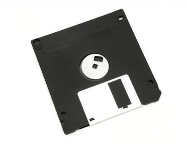

A floppy disk is a disk storage medium composed of a disk of thin and flexible magnetic storage medium encased in a rectangular plastic carrier. It is read and written using a floppy disk drive (FDD). Floppy disks were an almost universal data format from the 1970s into the 1990s, used for primary data storage as well as for backup and data transfers between computers.
